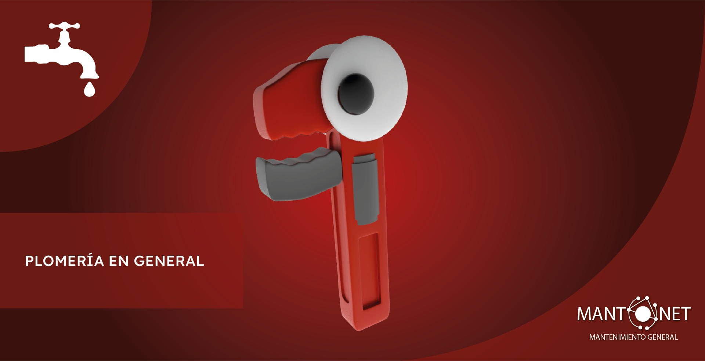

Plomería Profesional en CDMX: Soluciones Rápidas y Confiables

En **Mantonet**, somos tus expertos en **plomería en la Ciudad de México**. Resolvemos **todo tipo de problemas hidráulicos**, desde **fugas de agua** y **taponamientos en tuberías** hasta **instalaciones hidráulicas nuevas** y **mantenimiento preventivo**. Ofrecemos servicios de **fontanería a domicilio** para casas, departamentos, oficinas y comercios en toda la CDMX, con especial atención a zonas céntricas y de alta demanda como el Centro Histórico, Roma, Condesa, Polanco y más.
Utilizamos **materiales de alta calidad** y **herramientas especializadas** de última generación (ej. equipo de termografía para detección de fugas no invasivas) para garantizar la durabilidad de nuestras reparaciones e instalaciones. Al finalizar, te entregamos un **informe técnico detallado** con el diagnóstico preciso, fotografías del antes y después, y recomendaciones personalizadas para prevenir futuros problemas.
Con **más de 200 servicios de plomería ejecutados con satisfacción garantizada** en la CDMX, tu tranquilidad es nuestra prioridad. Todos nuestros trabajos cuentan con una **garantía de [X meses/años]** sobre el servicio realizado.
---
Nuestros Servicios de Plomería Incluyen:
**Reparación de Fugas de Agua:** Detección precisa y reparación de fugas visibles y ocultas en tuberías, paredes, techos, y pisos.
**Destapacaños y Desazolve:** Solución profesional y eficiente a taponamientos en lavabos, WC, regaderas, coladeras y sistemas de desagüe principales.
**Instalaciones Hidráulicas Nuevas:** Diseño e implementación de sistemas de plomería completos para construcciones residenciales y comerciales, incluyendo redes de agua potable y drenaje.
**Mantenimiento Preventivo:** Revisión periódica, limpieza de tuberías y optimización de sistemas hidráulicos para prolongar su vida útil y evitar problemas mayores.
**Instalación y Reparación de Boilers y Calentadores de Agua:** Servicio completo para calentadores de paso, de depósito y solares.
**Servicios de Plomería de Urgencia en CDMX:** Atención rápida para emergencias de plomería que requieren solución inmediata.
---
¿Cómo Solicitas un Servicio de Plomería con Mantonet?
**Visita Sin Costo:** Realizamos una visita técnica gratuita en tu domicilio o negocio en CDMX para identificar el problema o evaluar tu instalación.
**Propuesta Detallada:** Te enviamos una cotización transparente y sin compromiso con materiales sugeridos, tiempos de ejecución y costos claros y competitivos.
**Agenda tu Servicio:** Agendamos la intervención profesional en el horario que mejor te convenga, con la flexibilidad que necesitas.
**Ejecución Profesional:** Nuestro equipo realiza el trabajo con máxima limpieza, revisa a fondo la funcionalidad y te entrega tu informe final de servicio para tu tranquilidad.